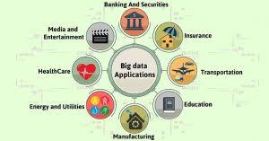

Application of big data
1-GOVERNMENT
Big data analytics has proven to be very useful in the government sector.
2-Technology
The technological applications of big data comprise of the following companies
3-Fraud detection
For businesses whose operations involve any type of claims or transaction processing
4-Marketing
Marketers have begun to use facial recognition software to learn how well their advertising succeeds or fails at stimulating interest in their products.
5-Smart Phones
Perhaps more impressive, people now carry facial recognition technology in their pockets

links: